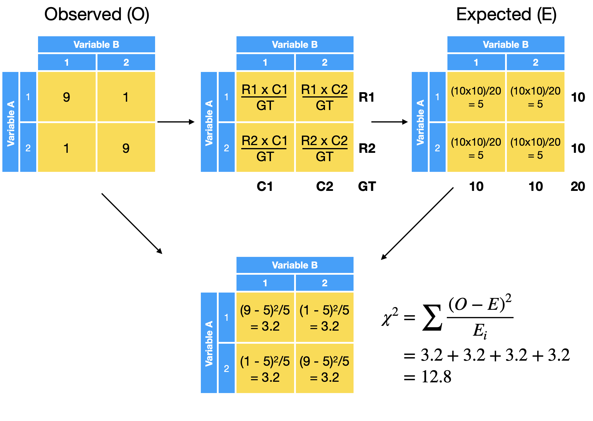

Comparing counts between >2x2 categories (unrelated subjects)#
We will explore how we can compare the counts for more than 2 x 2 categories for unrelated subjects

Data preparation#
We will be using a dataset from a survey done on undergraduate students at the University of Adelaide. For details see: https://vincentarelbundock.github.io/Rdatasets/doc/MASS/survey.html
We will focus on the self-reported response on their frequency of smoking and their level of exercise
Exercise: None, Some, FreqSmoking: Never, Occas, Regul, Heavy
Show code cell source
library(tidyverse)
data <- read_csv("https://raw.githubusercontent.com/kennethban/dataset/main/survey.csv")
smoke_exercise <- data %>%
mutate(Smoke = fct_relevel(Smoke, c("Never","Occas","Regul","Heavy")),
Exer = fct_relevel(Exer, c("None","Some","Freq"))) %>%
rename(Smoking=Smoke, Exercise=Exer) %>%
select(Exercise, Smoking) %>%
drop_na()
head(smoke_exercise)
── Attaching core tidyverse packages ───────────────────────────── tidyverse 2.0.0 ──
✔ dplyr 1.1.1 ✔ readr 2.1.4
✔ forcats 1.0.0 ✔ stringr 1.5.0
✔ ggplot2 3.4.2 ✔ tibble 3.2.1
✔ lubridate 1.9.2 ✔ tidyr 1.3.0
✔ purrr 1.0.1
── Conflicts ─────────────────────────────────────────────── tidyverse_conflicts() ──
✖ dplyr::filter() masks stats::filter()
✖ dplyr::lag() masks stats::lag()
ℹ Use the conflicted package (<http://conflicted.r-lib.org/>) to force all conflicts to become errors
New names:
• `` -> `...1`
Rows: 237 Columns: 13
── Column specification ─────────────────────────────────────────────────────────────
Delimiter: ","
chr (7): Sex, W.Hnd, Fold, Clap, Exer, Smoke, M.I
dbl (6): ...1, Wr.Hnd, NW.Hnd, Pulse, Height, Age
ℹ Use `spec()` to retrieve the full column specification for this data.
ℹ Specify the column types or set `show_col_types = FALSE` to quiet this message.
| Exercise | Smoking |
|---|---|
| <fct> | <fct> |
| Some | Never |
| None | Regul |
| None | Occas |
| None | Never |
| Some | Never |
| Some | Never |
We can make a proportional barplot to look at the proportions of level of smoking grouped by their level of exercise to see if there could be an association between them
x: independent variablefill: dependent variable
Show code cell source
# set plot dimensions
options(repr.plot.width=8, repr.plot.height=8)
smoke_exercise %>%
ggplot(aes(x=Exercise, fill=Smoking)) +
geom_bar(position="fill") +
theme_grey(base_size=20)
Visually, we can see some differences in the distribution of smoking habits in the different categories of exercise. However, we do not know if these differences could be due to random chance
How to quantify differences among the groups?#
We can calculate the chi squared value based on the sum squared differences between the observed and expected counts in the table divided by the expected counts
The expected counts are calculated based on
how the row values are distributed according to the column margins
how the column values are distributed according to the row margins

We will illustrate the calculation of the chi squared test statistic for the data
First, we will define a local function print_table to output a formatted table. We will then use the table function to create a cross table of counts
Show code cell content
# cross-table convenience function
print_table <- function(input, margin=F) {
if (margin == T) { input <- addmargins(input)}
input <- htmlTable::txtRound(input,1)
input %>%
htmlTable::htmlTable(css.rgroup = "font-weight: 900; text-align: left;") %>%
IRdisplay::display_html()
}
Show code cell source
data_table <- table(smoke_exercise)
data_table %>% print_table()
| Smoking | ||||
|---|---|---|---|---|
| Never | Occas | Regul | Heavy | |
| Exercise | ||||
| None | 18.0 | 3.0 | 1.0 | 1.0 |
| Some | 84.0 | 4.0 | 7.0 | 3.0 |
| Freq | 87.0 | 12.0 | 9.0 | 7.0 |
The expected values can be calculated by a matrix multiplication of the row (e.g. R1, R2,..) and column margins (C1, C2,..) and dividing the product by the total
We find the row margin totals as a 3x1 matrix
Show code cell source
row_margin <- data_table %>%
rowSums %>%
as.matrix
row_margin %>% print_table()
| None | 23.0 |
| Some | 98.0 |
| Freq | 115.0 |
We find the column margin totals as a 1x4 matrix
Show code cell source
col_margin <- data_table %>%
colSums %>%
as.matrix %>%
t
col_margin %>% print_table()
| Never | Occas | Regul | Heavy |
|---|---|---|---|
| 189.0 | 19.0 | 17.0 | 11.0 |
We calculate the expected values using the %*% matrix multiplication operator on both row and column margin matrices and dividing the products by the total count
Show code cell source
total_num <- sum(data_table)
expected <- row_margin %*% col_margin / total_num
expected %>% print_table()
data_table %>% print_table()
| Never | Occas | Regul | Heavy | |
|---|---|---|---|---|
| None | 18.4 | 1.9 | 1.7 | 1.1 |
| Some | 78.5 | 7.9 | 7.1 | 4.6 |
| Freq | 92.1 | 9.3 | 8.3 | 5.4 |
| Smoking | ||||
|---|---|---|---|---|
| Never | Occas | Regul | Heavy | |
| Exercise | ||||
| None | 18.0 | 3.0 | 1.0 | 1.0 |
| Some | 84.0 | 4.0 | 7.0 | 3.0 |
| Freq | 87.0 | 12.0 | 9.0 | 7.0 |
We can now calculate the chi squared test statistic
Show code cell source
sum((data_table - expected)^2/expected)
Using a function
We can use the chisq_test function from the rstatix library
rstatix::chisq_test(categorical_variable1 ~ categorical_variable2)
Show code cell source
data_table %>%
rstatix::chisq_test(Smoking ~ Exercise) %>%
pull(statistic)
Warning message in stats::chisq.test(x, y, correct = correct, p = p, rescale.p = rescale.p, :
“Chi-squared approximation may be incorrect”
1. Resampling approach#
To get an intuition of the null hypothesis test, we can use the resampling approach
To do this, we randomly mix the categories among the groups and do this multiple times to generate a dataset that represents the null hypothesis
We then calculate chi-squared statistic for each of the permutations generated by random mixing of the categories to generate the null distribution
Finally, we calculate the p-value, which is the probability we find a chi-squared statistic in the null distribution that is equal/greater than what we observe in the data
Show code cell source
# set plot dimensions
options(repr.plot.width=8, repr.plot.height=8)
smoke_exercise %>% ggplot(aes(x=Exercise, fill=Smoking)) +
geom_bar(position="fill") +
theme_grey(base_size=20)
1.1. Calculate the test statistic#
We calculate the chi squared test statistic using the chisq_test function from the rstatix library
Show code cell source
obs_stat_chisq <- data_table %>%
rstatix::chisq_test(Smoking ~ Exercise) %>%
pull(statistic)
obs_stat_chisq
Warning message in stats::chisq.test(x, y, correct = correct, p = p, rescale.p = rescale.p, :
“Chi-squared approximation may be incorrect”
1.2. Generate a null distribution by resampling#
First, we will generate 1000 samples from the data by randomly permuting the counts using the infer library
Show code cell source
library(infer)
num_resample <- 1000
permute <- smoke_exercise %>%
specify(Smoking ~ Exercise) %>%
hypothesize(null = "independence") %>%
generate(reps = num_resample, type = "permute")
head(permute)
tail(permute)
| Smoking | Exercise | replicate |
|---|---|---|
| <fct> | <fct> | <int> |
| Never | Some | 1 |
| Never | None | 1 |
| Never | None | 1 |
| Regul | None | 1 |
| Regul | Some | 1 |
| Never | Some | 1 |
| Smoking | Exercise | replicate |
|---|---|---|
| <fct> | <fct> | <int> |
| Never | Some | 1000 |
| Never | Some | 1000 |
| Regul | Some | 1000 |
| Never | Some | 1000 |
| Never | Some | 1000 |
| Never | Freq | 1000 |
We can plot a sample of the randomly permuted dataset
Show code cell source
# set plot dimensions
options(repr.plot.width=10, repr.plot.height=10)
permute %>%
filter(replicate <= 9) %>%
ggplot(aes(x=Exercise, fill=Smoking)) +
geom_bar(position="fill") +
facet_wrap(~replicate) +
theme_grey(base_size=20)
We calculate the chi squared test statistic for each replicate by using the chisq_test function from the rstatix library
Show code cell source
resample <- permute %>%
group_by(replicate) %>%
group_modify( ~ {suppressWarnings(rstatix::chisq_test(table(.x$Smoking, .x$Exercise)))}) %>%
ungroup %>%
rename(stat=statistic) %>%
select(replicate, stat)
head(resample)
tail(resample)
| replicate | stat |
|---|---|
| <int> | <dbl> |
| 1 | 5.830434 |
| 2 | 8.337704 |
| 3 | 5.907118 |
| 4 | 4.183737 |
| 5 | 7.377390 |
| 6 | 3.040787 |
| replicate | stat |
|---|---|
| <int> | <dbl> |
| 995 | 5.160773 |
| 996 | 2.032337 |
| 997 | 4.297180 |
| 998 | 3.863753 |
| 999 | 1.005724 |
| 1000 | 1.968193 |
We now have a distribution of chi squared test statistics under the assumption that there is no association between the 2 variables
1.3. Use the null distribution to calculate the p-value#
Now that we have the chi squared null distribution, we can check if any of these values equal/exceed the observed chi squared statistic in the data obs_stat_chisq
Show code cell source
resample <- resample %>%
mutate(exceed = if_else(abs(stat) >= abs(obs_stat_chisq), "Y","N") %>%
factor(levels=c("Y","N")))
resample %>% sample_n(10)
| replicate | stat | exceed |
|---|---|---|
| <int> | <dbl> | <fct> |
| 679 | 4.768934 | N |
| 642 | 7.064295 | Y |
| 576 | 4.962220 | N |
| 436 | 4.275919 | N |
| 314 | 4.998128 | N |
| 853 | 6.727807 | Y |
| 731 | 2.492426 | N |
| 297 | 3.349810 | N |
| 714 | 6.039713 | Y |
| 783 | 12.959347 | Y |
We can visualize the distribution of chi squared statistic values and indicate those values that are equal or exceed the the observed chi squared statistic in the data
Show code cell source
# set plot dimensions
options(repr.plot.width=8, repr.plot.height=8)
resample %>%
ggplot(aes(x=stat, fill=exceed)) +
geom_histogram(binwidth=0.5) +
geom_vline(xintercept = obs_stat_chisq, color = "red", linetype="dashed") +
scale_fill_manual(values=c("salmon", "grey50"),
labels=c("Y","N"), drop=FALSE) +
theme_grey(base_size=16) +
theme(legend.position = "top")
Finally, we can get the p-value by calculating how many times the chi square statistic in the null distribution is equal/exceeds the observed chi square statistic
Show code cell source
resample %>% summarize(num_resample = n(),
num_exceed = if_else(exceed == "Y", 1,0) %>% sum,
p_value = num_exceed/num_resample)
| num_resample | num_exceed | p_value |
|---|---|---|
| <int> | <dbl> | <dbl> |
| 1000 | 486 | 0.486 |
We see that ~40-50% of the time, the null distribution is equal/exceeds the observed chi squared test statistic in the data. This indicates the observed data is consistent with the hypothesis that there is no association between the categories
2. Analytical approach#
In the analytical approach, the null distribution is not derived from resampling, but it is calculated from a theoretical formula that generalizes the distribution
Show code cell source
# set plot dimensions
options(repr.plot.width=8, repr.plot.height=8)
smoke_exercise %>% ggplot(aes(x=Exercise, fill=Smoking)) +
geom_bar(position="fill") +
theme_grey(base_size=20)
2.1. Calculate the test statistic#
We calculate the chi square test statistic using the chisq_test function from the rstatix library
Show code cell source
obs_stat_chisq <- data_table %>%
rstatix::chisq_test(Smoking ~ Exercise) %>%
pull(statistic)
obs_stat_chisq
Warning message in stats::chisq.test(x, y, correct = correct, p = p, rescale.p = rescale.p, :
“Chi-squared approximation may be incorrect”
2.2. Use the theoretical null distribution to calculate the p-value#
The null chi squared distribution is parameterized by the degrees of freedom df
df= (number of rows - 1) * (number of columns - 1)
Show code cell source
df <- (nrow(data_table) - 1) * (ncol(data_table) - 1)
df
We use the vdist_chisquare_prob function from vistributions library to plot the chi squared distribution and calculate the p-value
Show code cell source
library(vistributions)
# set plot dimensions
options(repr.plot.width=8, repr.plot.height=8)
vdist_chisquare_prob(perc = obs_stat_chisq,
df=df,
type = "upper")
We see that the p-value is 0.48, which is close to the value we obtained through resampling
Using a function
We can also use the chisq_test function from the rstatix library
Show code cell source
data_table %>% rstatix::chisq_test()
Warning message in stats::chisq.test(x, y, correct = correct, p = p, rescale.p = rescale.p, :
“Chi-squared approximation may be incorrect”
| n | statistic | p | df | method | p.signif | |
|---|---|---|---|---|---|---|
| <int> | <dbl> | <dbl> | <int> | <chr> | <chr> | |
| 1 | 236 | 5.488546 | 0.483 | 6 | Chi-square test | ns |
Effect size#
Show code cell source
print_table(data_table)
| Smoking | ||||
|---|---|---|---|---|
| Never | Occas | Regul | Heavy | |
| Exercise | ||||
| None | 18.0 | 3.0 | 1.0 | 1.0 |
| Some | 84.0 | 4.0 | 7.0 | 3.0 |
| Freq | 87.0 | 12.0 | 9.0 | 7.0 |
Show code cell source
# set plot dimensions
options(repr.plot.width=8, repr.plot.height=8)
smoke_exercise %>%
ggplot(aes(x=Exercise, fill=Smoking)) +
geom_bar(position="fill") +
theme_grey(base_size=20)
The effect size for counts in an R x C table is defined by Cramer’s \(V\)
Show code cell source
chi_sq <- data_table %>%
rstatix::chisq_test() %>%
pull(statistic) %>% as.numeric()
n <- sum(data_table)
min_df <- min(nrow(data_table)-1, ncol(data_table)-1)
sqrt((chi_sq/n)/min_df)
Warning message in stats::chisq.test(x, y, correct = correct, p = p, rescale.p = rescale.p, :
“Chi-squared approximation may be incorrect”
Using a function
We can use the cramers_v function from the effectsize library
Show code cell source
effectsize::cramers_v(data_table)
| Cramers_v_adjusted | CI | CI_low | CI_high |
|---|---|---|---|
| <dbl> | <dbl> | <dbl> | <dbl> |
| 0 | 0.95 | 0 | 1 |
Cramer’s V can overestimate the effect size of an association. To correct for this bias, we can include the adjust=T option
Show code cell source
effectsize::cramers_v(data_table, adjust = T)
| Cramers_v_adjusted | CI | CI_low | CI_high |
|---|---|---|---|
| <dbl> | <dbl> | <dbl> | <dbl> |
| 0 | 0.95 | 0 | 1 |
Application: Statistical plotting#
We will use the ggstatsplot library. For details see: https://indrajeetpatil.github.io/ggstatsplot/
library(ggstatsplot)
You can cite this package as:
Patil, I. (2021). Visualizations with statistical details: The 'ggstatsplot' approach.
Journal of Open Source Software, 6(61), 3167, doi:10.21105/joss.03167
We will use the same survey dataset looking at smoking and exercise
We can look at the crosstable by using the table function and passing it to our local print_table function for formatting
library(tidyverse)
data <- read_csv("https://raw.githubusercontent.com/kennethban/dataset/main/survey.csv")
smoke_exercise <- data %>%
mutate(Smoke = fct_relevel(Smoke, c("Never","Occas","Regul","Heavy")),
Exer = fct_relevel(Exer, c("None","Some","Freq"))) %>%
rename(Smoking=Smoke, Exercise=Exer) %>%
select(Exercise, Smoking) %>%
drop_na()
head(smoke_exercise)
New names:
• `` -> `...1`
Rows: 237 Columns: 13
── Column specification ─────────────────────────────────────────────────────────────
Delimiter: ","
chr (7): Sex, W.Hnd, Fold, Clap, Exer, Smoke, M.I
dbl (6): ...1, Wr.Hnd, NW.Hnd, Pulse, Height, Age
ℹ Use `spec()` to retrieve the full column specification for this data.
ℹ Specify the column types or set `show_col_types = FALSE` to quiet this message.
| Exercise | Smoking |
|---|---|
| <fct> | <fct> |
| Some | Never |
| None | Regul |
| None | Occas |
| None | Never |
| Some | Never |
| Some | Never |
Show code cell content
# cross-table convenience function
print_table <- function(input, margin=F) {
if (margin == T) { input <- addmargins(input)}
input <- htmlTable::txtRound(input,1)
input %>%
htmlTable::htmlTable(css.rgroup = "font-weight: 900; text-align: left;") %>%
IRdisplay::display_html()
}
Show code cell source
table(smoke_exercise) %>% print_table()
| Smoking | ||||
|---|---|---|---|---|
| Never | Occas | Regul | Heavy | |
| Exercise | ||||
| None | 18.0 | 3.0 | 1.0 | 1.0 |
| Some | 84.0 | 4.0 | 7.0 | 3.0 |
| Freq | 87.0 | 12.0 | 9.0 | 7.0 |
We will make a plot comparing counts for >2x2 categories with parametric chi-squared test using the ggbarstats function from ggstatsplot
x: column label in table (dependent)y: row label in table (independent)
For details, see: https://indrajeetpatil.github.io/ggstatsplot/reference/ggbarstats.html
# set plot dimensions
options(repr.plot.width=8, repr.plot.height=8)
smoke_exercise %>%
ggbarstats(x=Smoking,
y=Exercise) +
theme_grey(base_size=16)
Exercise - Comparing counts > 2x2 categories#
For this exercise, we will use the Framingham heart dataset
library(tidyverse)
# load data
data_plot <- read_csv("https://raw.githubusercontent.com/kennethban/dataset/main/framingham.csv")
# recap of what was done
data_plot <- data_plot %>%
rename(sex = male) %>%
mutate(sex = as.factor(sex),
age = as.integer(age),
education = as.factor(education),
currentSmoker = as.factor(currentSmoker),
cigsPerDay = as.integer(cigsPerDay),
BPMeds = as.factor(BPMeds),
prevalentStroke = as.factor(prevalentStroke),
prevalentHyp = as.factor(prevalentHyp),
diabetes = as.factor(diabetes),
totChol = as.integer(totChol),
heartRate = as.integer(heartRate),
TenYearCHD = as.factor(TenYearCHD)
)
data_plot <- data_plot %>%
mutate(glucose = round(glucose/18, digits=1)) %>% # mg/dL to mmol/L
mutate(totChol = round(totChol/39, digits=1)) # mg/dL to mmol/L
head(data_plot)
Rows: 4240 Columns: 16
── Column specification ─────────────────────────────────────────────────────────────
Delimiter: ","
dbl (16): male, age, education, currentSmoker, cigsPerDay, BPMeds, prevalent...
ℹ Use `spec()` to retrieve the full column specification for this data.
ℹ Specify the column types or set `show_col_types = FALSE` to quiet this message.
| sex | age | education | currentSmoker | cigsPerDay | BPMeds | prevalentStroke | prevalentHyp | diabetes | totChol | sysBP | diaBP | BMI | heartRate | glucose | TenYearCHD |
|---|---|---|---|---|---|---|---|---|---|---|---|---|---|---|---|
| <fct> | <int> | <fct> | <fct> | <int> | <fct> | <fct> | <fct> | <fct> | <dbl> | <dbl> | <dbl> | <dbl> | <int> | <dbl> | <fct> |
| 1 | 39 | 4 | 0 | 0 | 0 | 0 | 0 | 0 | 5.0 | 106.0 | 70 | 26.97 | 80 | 4.3 | 0 |
| 0 | 46 | 2 | 0 | 0 | 0 | 0 | 0 | 0 | 6.4 | 121.0 | 81 | 28.73 | 95 | 4.2 | 0 |
| 1 | 48 | 1 | 1 | 20 | 0 | 0 | 0 | 0 | 6.3 | 127.5 | 80 | 25.34 | 75 | 3.9 | 0 |
| 0 | 61 | 3 | 1 | 30 | 0 | 0 | 1 | 0 | 5.8 | 150.0 | 95 | 28.58 | 65 | 5.7 | 1 |
| 0 | 46 | 3 | 1 | 23 | 0 | 0 | 0 | 0 | 7.3 | 130.0 | 84 | 23.10 | 85 | 4.7 | 0 |
| 0 | 43 | 2 | 0 | 0 | 0 | 0 | 1 | 0 | 5.8 | 180.0 | 110 | 30.30 | 77 | 5.5 | 0 |
We will define a local function print_table to output a formatted table
Show code cell content
# cross-table convenience function
print_table <- function(input, margin=F) {
if (margin == T) { input <- addmargins(input)}
input <- htmlTable::txtRound(input,1)
input %>%
htmlTable::htmlTable(css.rgroup = "font-weight: 900; text-align: left;") %>%
IRdisplay::display_html()
}
Part 1#
Create a table of counts for the education and TenYearCHD variables and print it
educationas row labelTenYearCHDas column label
# start here
Show code cell content
# solution
data_plot %>%
select(education, TenYearCHD) %>%
table() %>%
print_table()
| TenYearCHD | ||
|---|---|---|
| 0 | 1 | |
| education | ||
| 1 | 1397.0 | 323.0 |
| 2 | 1106.0 | 147.0 |
| 3 | 601.0 | 88.0 |
| 4 | 403.0 | 70.0 |
Part 2#
Generate a statistical plot showing the different proportions of patients with/without chronic heart disease (TenYearCHD) by education using ggbarstats from ggstatsplot
State the effect size, 95% CI and the p-value
library(ggstatsplot)
# start here
Show code cell content
# solution
library(ggstatsplot)
# set plot dimensions
options(repr.plot.width=8, repr.plot.height=8)
data_plot %>%
ggbarstats(x=TenYearCHD,
y=education) +
theme_classic(base_size=16)